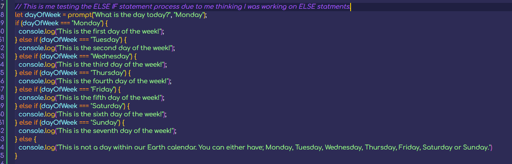

If Statements
So far I've done the internal and external setup along with some simple comparisons using the comparison operators. For example, 8 > 9; (false) would be a simple comparison. However, I haven't looked into what I can actually do with both answers right and wrong. But that's where if statements come in and I've already had a go at these in college and they're pretty straight forward and easy to get the hang of.
Basically if the answer is this then do something, if it's not this then do something else in a very simple concept. And that's where these if statements come in.
College Understanding
In college I did something like [var Reply;] which just creates a variable called Reply with no value, then I did [Reply = prompt("What is the capital of Czechia (Czech Republic)?").toUpperCase();] which will give the user a prompt on the page load and have the question that is inside the String. Upon the user entering any input it will then set that input to the Reply variable and make it all upper case.
Below is the if statement I used. If the user got the correct answer being "Prague" (which gets capitalised), then an alert will pop up saying "Correct.". However, anything else then they would get a different alert which says "Incorrect.".

I'll get around to incorporating what I learn in college here as well as my self learning due to me currently learning more in college due to illness but this will change soon.
Back To Udemy Course
The college stuff I did above is pretty basic stuff compared to what I can and will learn with this course I believe. Not only that but the stuff I can just learn myself by testing and having a go.
So an IF statement is basically like a true or false statement, in the sense that it will run code if something is true and if not then it will do nothing (because it's the IF ELSE statment that runs some other code). Interesting so I'm not sure if this actually works but I'm going to test it. It seems I could have something like:
- [let dogs = 3;]
- [if (rating === 3) { console.log("Yeap I have " + dogs + " dogs!"); }]
I might be able to use this to just run if it is true and then do nothing if it's not true. I was assuming I'd need an IF ELSE statement which I showed above for everything but that's not the case. For the exact thing I just said, what if I wanted code to only run if something was true? Then I'd just use the IF statement. The IF ELSE statment would be used for something different like if true then do thing 1, if false (not true) then do thing 2.
I'll test this within the JavaScript file I made for this page. Inside the () for the IF statement, these would be called conditions. These conditions need to be met before doing x, y, or z.
Something to note is that the IF statement can be combined with ELSE, ELSE IF and be nested, so an IF statement could have another IF statement or ELSE/ELSE IF statment nested inside.
If the condition is not met and it's false for the IF statement then only the code within that IFs curly braces does not get run, if there's code before or after this they will still get run. Technically this code does get run, it's just not needed as it's not true but the browser still reads it. Not ignored but not used kind of thing.
(IF) ELSE Statements
Moving onto the ELSE statements, I've already talked a little about these during the IF statement so I should have a fairly decent overview into what these are and they're not that hard to understand or figure out honestly. (Compared to things like objects or OOP etc these seem pretty easy.)
An ELSE statement is similar to an IF statement, where it looks for a condition and if that condition is met (true) then it will run some code inside the curly braces however, unlike the IF statement the IF ELSE statement can run different code if the condition is not met.
An example of this would be, a user loads up my website and a pop up occurs, it asks the user to input their age. Depending if the user puts 18+ (age >= 18) or not will determine what happens with the IF ELSE statment. Lets say the user puts in 18 (true), then the website will say thank you with an alert and load the website. However, is the user inputs something below 18 then they will get a different alert saying "Sorry you cannot access this website." and will redirect them to somewhere else.
I know the above example isn't really plausible since it's not hard to just put 18 into a prompt, but this is an example for a reason. Unlike the IF statement it's the second piece that is different, originally with the IF statement no code will be ran if the condition is false. But when having that ELSE there's another set of curly braces that has some more code that can be used when the condition is false, just like the example above.
I will show this off within the linked script file, but I hope this will help when I come back around to actually making this into a proper project side and cleaning up my code etc.
ELSE IF Statements
ELSE statements come after this (In the course) one and I didn't quite realise that so I'll be doing these now and leave what I have above for the ELSE statements due to it being correct but I will go back through it just to double check before keeping it.
Either way lets get on with ELSE IF statements, I'm not really sure if I've done these before actually so this will be interesting and I don't really have a full good idea on what these could be really. I know they're to do with ELSE and IF statements. It might be as simple as them just being combined really and it probably is.
Interesting, so it seems similar to just an ELSE statement which is weird. "If not the first thing, maybe this other thing??" is what the basic description that Colt has on his slide. Okay so the way this works is if the first IF statement runs and fails that is when the ELSE IF statement will run. But then again this just sounds like an ELSE statement to me.
Okay so I think I understand this now, ELSE IF is basically similar to ELSE the only difference being is that ELSE doesn't allow for another condition it just looks for anything else that isn't expected. I'll be using the example Colt is using with his video.
Think of the code grabbing the week day and assigning that to a variable called "dayOfWeek", then in the first IF statement it would have the condition of [dayOfWeek === "Monday"] then it would print out in console that this is the first day of the week.
However, if I was to have an ELSE IF statement right after this with another condition like [dayOfWeek === "Tuesday"] then I could have an output of "This is the second day of the week.", and I can make more of these for the other days adding the other days as conditions like I've done with Tuesday.
Although if the code runs through to the end then I could just let it end there and then and nothing wll happen but I could also add an ELSE statement to the end to catch everything else that maybe input to the input and return a message telling them the options they have for the input. Below is the example made in the js file linked to this page.
As you can see with this I can have multiple conditions technically, although it does look a bit much and there's probably a better way in doing this but this is how I've used this to understand it. Something else that others are saying is that it's a slimmed down version of IF ELSE and that it's used "to specify a new condition to test, i the first condition is false."